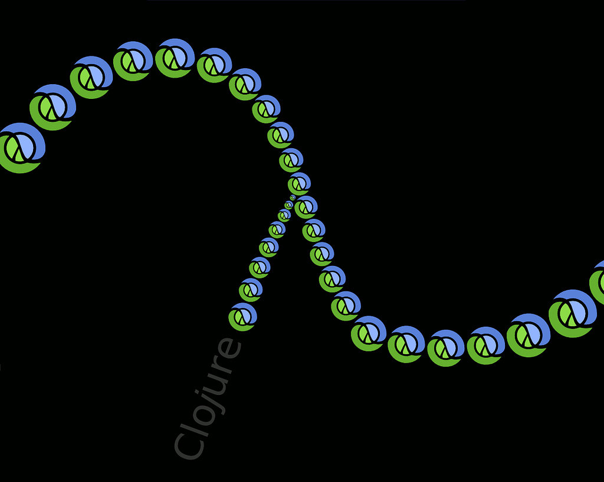

Clojure for Everyone
John Stevenson
@jr0cket
What is Clojure?
General purpose Functional programming language
- on the JVM or V8 engine
A modern approach to LISP
- LISP is the 2nd oldest language still used in production
Who is using Clojure
Everyone, its a general purpose language after all
- USwitch - creating meaningful data from multiple sources
- Daily Mail - High volume site Mail Online
- Xively - IoT
- Masterdon C - data centre analysis (Incanta, Storm)
- Thoughtworks - rapid development for clients
- CitiGroup - financial trading
- LinkedIn - aspects of social graph
- Meta-X - performance art (Overtone, Quil)
Also create games using play-clj
Why Clojure
What is it about Clojure that makes people love it so much ?
Simple Clojure syntax
Really quick to get coding with
- define data structures (the data)
- define functions (the behaviour)
- call functions (which always return a value)
Simple Clojure program
Defining a namespace, data structure & function, then calling the function.
(ns jr0cket.demo) (def my-data [1,2,3, frog]) (defn do-stuff [parameter] (str parameter)) (do-stuff my-data)
Clojure poetry

Data Structure Driven Design
- define a meaningful data structure
- define the behaviour (functions) that work with that data
"It is better to have 100 functions operate on one data structure than to have 10 functions operate on 10 data structures" - A.J. Perlis
Data Structures
Persistent data structures built in:
- List
- Map
- Vector (think array)
- Sets
Typical data structures are maps, vectors, maps of maps, vectors of vectors, etc
Mixing data structures all together
(def data {:keyword1 value1 :vector [1 2 3] :map {:a 1 :b 2 :c cat}} :mixed {:vector [1 2 3 fish] :vector-of-vectors [1 2 [3 4]] :maps-n-vectors {:co-ords [12.37 53.78]}})
Note that I have used keywords (names that start with a :) to describe the types of data structures used within the above map
Data Structure examples
Expressive data structures made code more understandable
(def locations { :london {:latitude 34, :longtitude 57}}) (def location { :london {:gps {:co-ords [12.37 53.78]}} :new-york {:gps {:co-ords [12.37 53.78]}} :Birmingham {:gps {:co-ords [12.37 53.78]}}})
Language design
A very small core library
- with a large set of libraries
Build Automation, Real-time music creation, asyncronous communication, static type system
Only a handful of building blocks
Clojure primatives
if let loop recur do set! quote var
And a few extra to make Java Interop nice
new . throw try
Stateless approach to design
- immutability is awesome and everywhere
- persistent collections
- Software Transactional Memory (make changes like an atomic database)
Atomic Data Types
- arbritrary precision integers
- Doubles 1.234, BigDecials 1.23M
- Rations 22/7
- Strings "jr0cket", Characters \a \b \c
- Symbols fred wilma , keywords :barney :betty (fast keys for maps)
- Boolean true false , Null nil (nil is false, `is nil` as a condition (eg, if else))
- Regex patterns #"a*b"
A great way to explain Clojure is to talk about data
Persistent Data Structures
Lists, Vectors, Maps & Sets are all immutable
- cannot be changed once defined
Modifying persistent data structures
Making a change creates a new data structure
- contains only the change
- links back to the original data structure
- original data structure remains unchanged
Software Transational Memory (STM)
Change data in a controlled way
- live having an atomic in-memory database
Define Atoms and swap! their values
Dynamic development
- REPL
- define functions on the fly
- load & compile code at runtime (load fixes into running production)
- introspection - not just typing things in, but accessing the Clojure runtime
Notions of phases of compilation are relaxed, you are compiling all the time into bytecode
Extensibility
Macros allow developers to create new features for the language
- no waiting for the langugage designers
All of Clojure
Special Ops are the Clojure language, everything else is a Macro
fn let loop recur do new . throw try set! quote var def if
Build Tool Macro
Leiningen makes it really easy to define a Clojure project using a Macro
(defproject name version :description "" :dependencies [ [library version] [] ])
The Whole JVM world of Libraries
Easy to use Java/JVM libraries from Clojure
. new
Importing libraries
Java.Lang
java.lang library is always included
Example: Java Date
A function to return the current date
(defn now [] (java.util.Date.))
Example: Java Math
Define a symbol to represent Pi
(def pi Math/PI)
Example: Joda Time
clj-time is a wrapper around joda-time
(require '[clj-time.core :as time]) (require '[clj-time.format :as time-format]) (time/now) => #<DateTime 2013-03-31T03:23:47.328Z> (def time-formatter (time-format/formatters :basic-date-time)) ;; ISO 8601 UTC format (time-format/unparse custom-formatter (date-time 2010 10 3)) => "20101003T000000.000Z"
Wealth of existing Java libraries
- many wrappers to make them even easier to use
- nicer to code in Clojure than Java
Amazing Clojure Libraries
clojars
Asynchronus coding as a library
core.async
Type system as a library
If you must really define your own types
Amazing community
Lets play with Clojure
Lets write some clojure using LightTable
Why not other functional languages ?
Haskell
The pure approach makes Haskell a harder language to fully understand
JavaScript
Have you seen the syntax ?
- actually Functional JavaScript is not too bad
An immutable approach is not strongly supported by the language
Python
Lots of great python developers out there
- never seen that many using a Functional approach
Learning Clojure
(false? (afraid brackets))
- Learn Clojure on the Internet
- Read some Clojure books
- find or start a Clojure / Functional meetup
4Clojure
An increasingly difficult set of changenges to help you understand Clojure

4Clojure - simple example

4Clojure - more complexe example

Books
- Clojure Made Simple (ebook) - £1.99 on Amazon.co.uk
- Joy of Clojure
- Clojure Programming
- Programming Clojure - 2nd edition
Blogs, Documentation, etc.
Planet Clojure - blog aggregator
blog.jr0cket.co.uk - Clojure, Emacs & Git articles
clojure.org - official documentation
clojuredocs.org - community docs & examples
Clojure Cheatsheet - quick syntax & function reference
Thank you
@jr0cket
jr0cket.co.uk
github.com/jr0cket
Leiningen for everything
Leiningen allows you to:
- Create projects
- Manage dependencies (uses mvn local cache)
- Package projects into libraries
- Generate Maven POM files (if you must)
- Deploy your libraries on Clojars
- Run the REPL
Leiningen Requirements
Must have the Java JDK (not just the JRE)
- this is a requirement for any Clojure development
Leiningen Demo
Time for some live hacking…
Leiningen core commands
- Create a new project
lein new project-name
- Check dependencies and download any required
lein deps
- Run a REPL
lein repl
- Find out more
lein help
Demo code - project.clj
A basic Leiningen project definition
(defproject whats-my-salary "0.1.0-SNAPSHOT" :description "Calculate salary after tax for perminant employees" :url "http://blog.jr0cket.co.uk" :license {:name "Eclipse Public License" :url "http://www.eclipse.org/legal/epl-v10.html"} :dependencies [[org.clojure/clojure "1.4.0"]] :main whats-my-salary.core )
Demo code - more stuff..
Colourful code
(defn show-me-the-colours [colour] ( str "The colour of money is" colour))
Emacs for Clojure
Emacs is a powerful tool for your developer life, its a nice editor too…
- development environments for lots of languages
- manage tasks, take effective notes and create presentations
- Ubuntu: Personal Package Archive for latest version
- MacOSX: EmacsForMacOSX.com or via Homebrew
- Windows: pre-compiled version available
Emacs Live
Creates an amazing environment for Clojure development
- keeping () under control with ParEdit
- starting / connecting to a REPL
- evaluating code in-line (C-x C-e) or all the code (C-c C-k)
- syntax highlighting & auto-complete
- gloriously colourful themes
Roll your own Emacs setup
Add the following Emacs packages
clojure-mode clojure-test-mode rainbow-delimiters ac-slime
Look at my basic setup on clojuremadesimple.co.uk
Learning Lisp with Emacs
Configuring Emacs is via a Lisp language called ELisp
- practice your core Clojure skills by tweaking Emacs
- lots of examples of Lisp code on Github
Light Table
A project to create a great experience for Clojure Development
- instarepl
- start / connect to multiple REPL's
- written in Clojurescript & a few lines of Clojure
- run browser & graphics in a window
- also supports Clojurescript, JavaScript & Python
- still beta, not officially release as yet
- join light-table-discussion Google group to keep up with changes
Installing Light Table
LightTable.com - binaries for Linux (32bit & 64bit), MacOSX & Windows
Documentation
Built in documentation
Chris Granger's blog - major announcements & a few guides
Java IDE's
Eclipse & Counterclockwise
code.google.com/p/counterclockwise
A great combo if you are used to Eclipse
- uses Leiningen underneath
- provides a REPL window
- usual syntax highlighting and other IDE stuff
Netbeans & Enclojure
Sadly the Enclojure plugin for Netbeans is depreciated
The Enclojure code is available on Github, if you want to kickstart the project.
Intelij & LaClojure
Thank you
Get Leiningen
Use Emacs, LightTable or your favourite IDE
Have fun in the REPL and love writing Clojure
ps. This presentation was brought to you via Emacs & Revealjs
Reveal.js is 2-D
Org-Reveal knows how to drill down into a subject.
Press the "Down" key on the page or the down arrow
Fragments in Reveal.js
- Create
- Fragment
- At Ease
#+ATTR_REVEAL: :frag
* Create
* Fragment
* At Ease
Reveal.js Can Alert
Change slide style to wake up the sleepy audience.
So do Org-Reveal.
** Reveal.js Can Alert :PROPERTIES: :reveal_data_state: alert :END:
Display Math
Write equations in Org. Present equations in HTML5.
\(\lim_{x \to \infty} \exp(-x) = 0\)
$\lim_{x \to \infty} \exp(-x) = 0$
The Org Source
Get Org source text for this presentation here.
Get Reveal.js and Org-reveal
- Reveal.js on GitHub:
https://github.com/hakimel/reveal.js - Org-reveal on GitHub:
https://github.com/yjwen/org-reveal

A bit more Clojure
Also using a local variable (which doesnt vary)
(ns jr0cket.demo) (def my-data [1 2 3 "frog"]) (defn do-stuff [parameter] (let [local-data (first parameter)] (str local-data))) (do-stuff my-data)